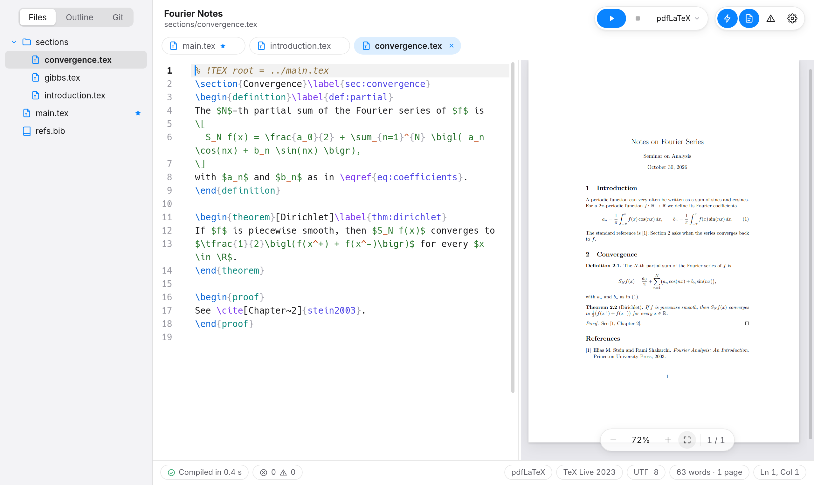
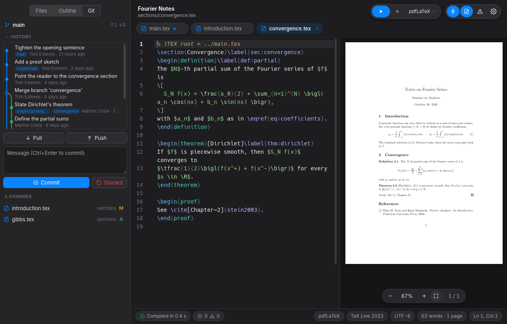
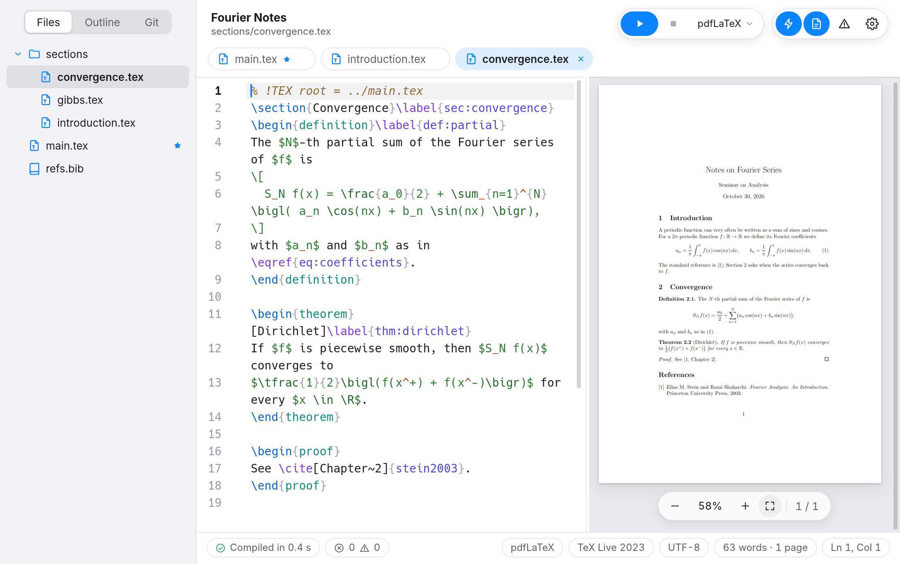
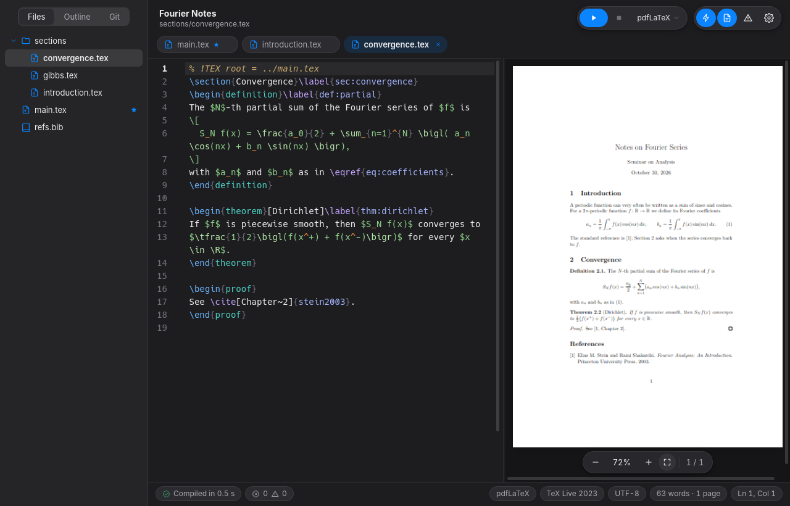
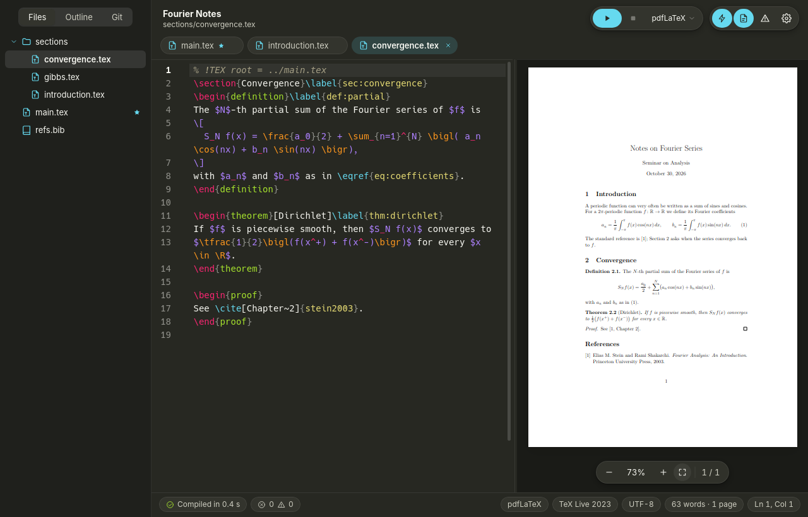
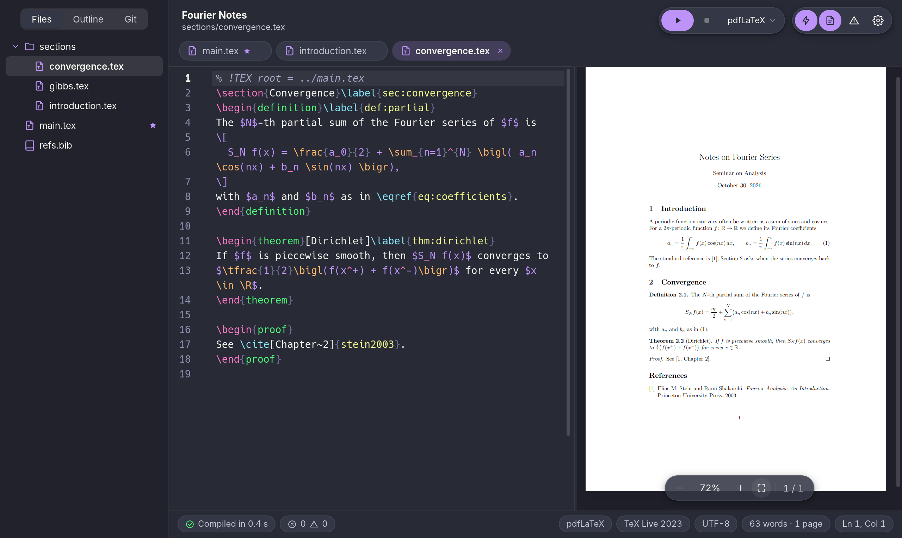

3Results
The estimator of Section 2 is unbiased, and its variance falls with the sample size:
Var(𝜃n) = 𝜎2n.(4)
Table 1 confirms it with 105 draws.
- the standard error is 𝜎/√n;
- halving it takes 4n draws.
Tex is a light LaTeX editor for Linux. The PDF follows the text you haven’t saved yet, a click takes you from any word on the page to the same word in the source, and errors are underlined on the line that caused them.
The estimator of Section 2 is unbiased, and its variance falls with the sample size:
Table 1 confirms it with 105 draws.
Click a word on either side to find it on the other.
Most LaTeX documents are a folder: a main.tex, a file per chapter, figures and a .bib. Tex opens that folder and leaves it as it was.
A Rust core on Tauri, not Electron. It opens in a moment, stays light on memory and keeps the editor responsive while TeX works in the background.
TeX runs in a private cache: no .aux, .log or .synctex.gz next to your sources, and unsaved text compiles without touching the disk.
About a second after you stop typing, TeX and BibTeX errors, undefined references, duplicate labels and missing citations are underlined where they happen.

Press F5. Your Beamer slides go full screen on the projector, and your own screen shows the current and next slide, your notes, a timer and the clock.
Version control comes built in, with Git. The panel in the sidebar lists what changed since the last commit. Commit, push and pull from there.

Monokai and Dracula come built in. Or choose System, and Tex follows your desktop.




% !TEX program line; the main file from % !TEX root or found on its own.\ref labels, \cite keys, files, packages, and the commands your own project defines.:w and :make. Off by default.For Debian, Ubuntu, Linux Mint and their relatives, on amd64.
From the latest release on GitHub.
In the folder where you saved it. apt also brings latexmk and a basic TeX Live if they are missing.
sudo apt install ./Tex_0.1.10_amd64.debTex is in the system menu under Office. From a terminal, open a folder or a file:
tex-editor ~/thesis
Why tex-editor? Because tex is TeX itself (/usr/bin/tex, from TeX Live). For biblatex with biber, also install biber. Missing LaTeX packages come from apt (texlive-latex-extra, texlive-science…). To uninstall: sudo apt remove tex.
You need Rust, Node.js 22+, libwebkit2gtk-4.1-dev, build-essential and TeX Live with latexmk. The package lands in src-tauri/target/release/bundle/deb/.
git clone https://github.com/toniesteves/tex.git && cd tex npm install npm run tauri build -- --bundles deb